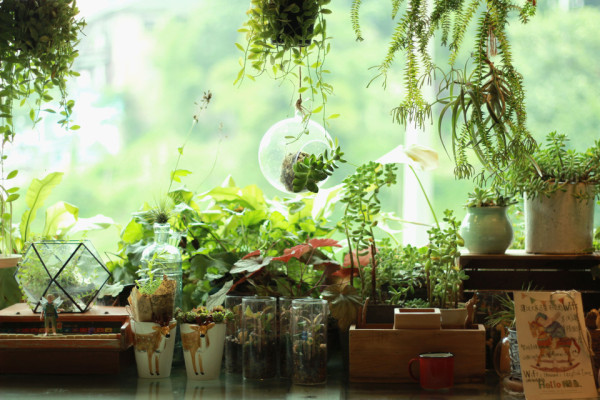
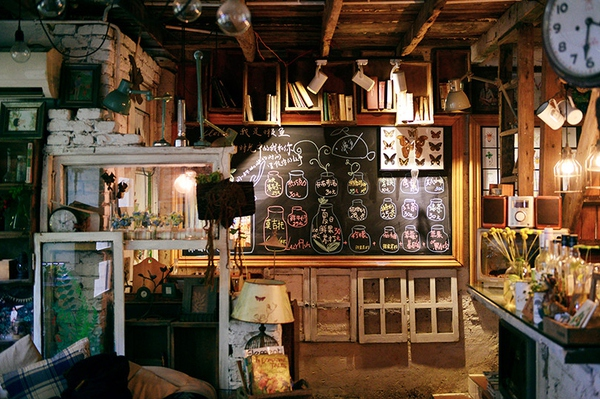
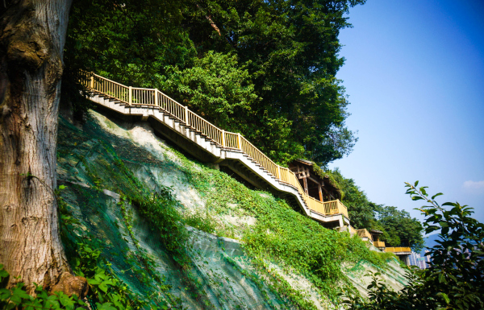
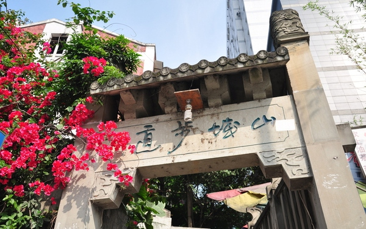
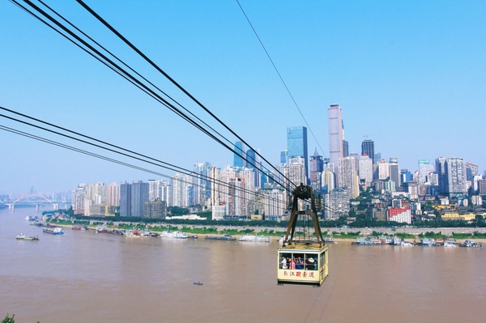
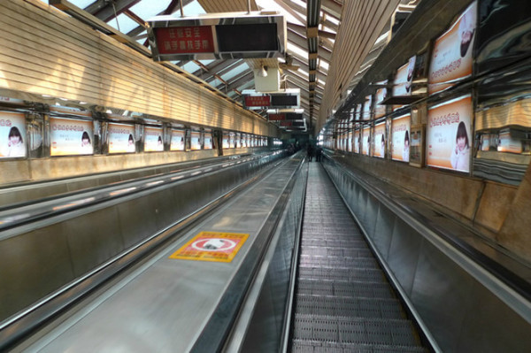
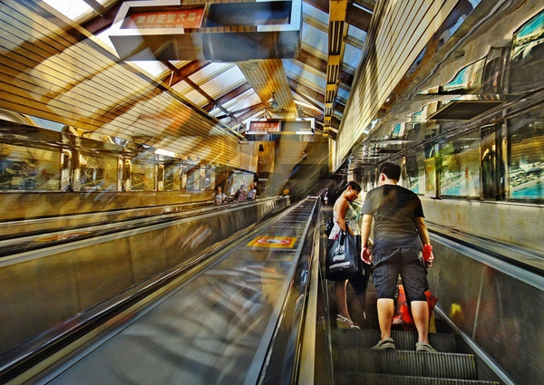
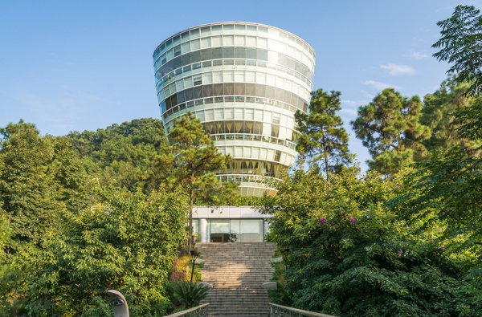

十一国庆长假计划到重庆和成都游玩，遂有此搜集，主要通过网络搜集一些重庆和成都比较不错的游玩的地方，整理计划
重庆篇
洪崖洞
如果你看过动漫《千与千寻》你一定会这路所惊呆的，晚上来到这里真的仿佛置身在电影里一样，非常震撼。洪崖洞以最具巴渝传统建筑特色的“吊脚楼”风貌为主体，依山就势，沿崖而建，让解放碑直达江滨，是游吊脚群楼、观洪崖滴翠、逛山城老街、赏巴渝文化、看两江汇流、品天下美食的好地方。
到达方式：从解放碑步行可达；或出了罗汉寺往西走一公里即到；或乘公交车直达；或乘2号线在临江门站步行前往
磁器口


如果说北京有王府井，武汉有户部巷，南京有夫子庙，西安有回民一条街，那么重庆这个城市的特色古街就是瓷器口了。来磁器口古镇，这个当年热闹的水陆码头，踩踩青石板路，品尝当地的美食小吃，找个茶馆坐坐，感受下老重庆的风土人情是很好的选择。
Tips：磁器口的主街人满为患，商业化严重，更建议去侧街，也是咖啡馆一条街，客量少，店面装饰都很有文艺味儿，是来磁器口的正确打开方式。（在此安利一家咖啡馆——懒鱼时光馆，上图即是该咖啡馆，是一家有故事的咖啡馆）
到达方式：乘地铁1号线在磁器口站下车可达（磁器口的大门有两个，下了轻轨走过的第一个大门只是景区的一个区域入口，真正的入口还要往前走500米左右）；公交至正街口站。
山城步道


靠山而修葺的一条步道，很多当地人也常去的一个地方，可以看到长江大桥、前面就是长江，交错的立交桥，反映出了重庆立体3D的地理特征。这条步道地处渝中半岛南向坡面，由北向南，依次经过市中山医院（原国民党政府立法、司法院）、抗建堂、菩提金刚塔、法国仁爱堂旧址、悬空栈道等，全长1748米，紧凑地串联了一系列传统街区和历史文化遗迹。小隐于野，大隐于市，避开纷纷扰扰的人群，静心徒步观景，实属不错的小众线路。
到达方式：坐公交车或者坐地铁一号线到七星岗站一号出口，找到通远门老城墙（很明显）。公交车站旁边就是，地铁站则要往前走。
@王易 提到：山城步道有很多条，风景最好的当属第三步道。怎么去呢？坐公交车或者坐地铁一号线到七星岗站一号出口，找到通远门老城墙（很明显）。公交车站旁边就是，地铁站则要往前走。通远门老城墙是市区保存较好的老城墙，比较小，可以上去看看，花不了几分钟，然后走到城墙的后面，也就是金汤街，顺着金汤街过领事巷、山城巷，最后走到山城步道的下出口，然后可以去坐较场口站的地铁。这是第一条线路，能看到很多老建筑，但看不到栈道，要看栈道的话是在山城巷靠近出口的时候有一条沿山的栈道，一直通往枇杷山后街。如果只想看栈道的话，就从七星岗地铁站2号出口出来，走枇杷山后街，然后走石板坡正街，，，看见监狱管理所右拐，，顺着一堵围墙就会看到栈道了，（是条小道别害怕）。然后顺着栈道就会进入山城巷了。在我看来，山城步道不仅仅是一条游览的线路，更多的也是给当地人提供小歇的去处。
长江索道

长江索道是我国自行设计制造的万里长江上第二条大型跨江客运索道，全长1166米，时速6M/秒，运行时间4分钟，被誉为万里长江第一条空中走廊和“山城空中公共汽车”，是重庆都市旅游唯一的空中交通载体。乘坐的轿厢四面玻璃全透明，可以清楚到看到江两岸的景色。到达对岸后不用着急回来可以在那边拍拍照，然后再返回来。白天和晚上看到的景致完全不一样。白天可以看清楚两岸的景致，晚上夜景很美，前提是天气要好。
到达方式：索道有两个站，新华路索道站和上新街索道站。一般游客都住在新华路这边，坐地铁1、6号线到小什字站下车，5A或5B出口都是新华路索道站。
皇冠大扶梯


来重庆最主要的就是感受山城特有的地形地貌和体验山城特色的交通工具，皇冠大扶梯便是代表作之一。皇冠大扶梯长度是亚洲第二长，站在上面的感觉和普通商场扶梯完全不同，30度的坡道带来的视觉冲击比较强烈，也有点刺激。现在很多景区也有爬山扶梯，但基本上都有很多段，皇冠扶梯就只有超长的一段，票价单面2元，别惊讶，把它想成公交就不奇怪了。
到达方式：地铁1号线、轻轨3号线两路口站出来就是，先下去再上来，两次会有不一样的感觉。
重庆火锅
去重庆如果没吃重庆火锅，可以说是没有来过这个山城。重庆大街小巷内遍布了火锅店，无论春夏秋冬，火锅店内总是座无虚席。重庆火锅，又称为毛肚火锅或麻辣火锅，是中国的传统饮食方式，以调汤考究，麻辣鲜香见长，具有原料多样，荤素皆可，适应广泛，风格独特。
推荐店铺：渝味晓宇火锅（上过舌尖上的中国）、朱氏胖子烂火锅（老牌子）、齐齐鳝鱼火锅（鳝鱼必点）、重庆刘一手火锅（传统火锅）、赵二火锅（《Lonely Planet》和《悦食》杂志推荐）。
南山一棵树观景台

这是一个看重庆夜景最美的地方。随便一个人问到重庆的夜景在哪里看最好，都会统一的回答朝天门或者一棵树。这是角度问题，朝天门看江景，南山一棵树是俯瞰全重庆最美的一个角度。站在观景台上，远远望去，重庆渝中区万家灯火；环抱的两江，流光溢彩；飞跨的长桥，轮廓清晰；层见叠出，错落有致，色彩缤纷的整座城市，在夜空的衬托下美轮美奂，光彩夺目。
到达方式：从解放碑方向出发的话，建议坐长江索道过去到南岸那一头，下索道出马路往右走不远，顺着山上方向走一段路可以看到上新街公交站再坐公车到达山上四中站后，又往回沿马路走一段路，约10分钟就到；最建议的还是索道抵达后打车上山。
@愿为森林 提到：说到一棵树为何不推荐大金鹰呢 那才是南山最高呀
朝天门
这里长江嘉陵江交融并流，长江水流浑厚，嘉陵江水流清澈，它们汇集后一起奔腾流向长江主流河道。江景非常壮观非常有气势。尤其是天气晴朗的时候。这里也是重庆最繁忙的码头之一，这个码头已经不仅仅是一座码头了，赋予很多意义。观光游船停泊在江水中央，依山而建的楼宇，直挺挺地宣示着人类改造自然的能力。
到达方式：坐地铁1号线到小什字下车，8出口；因施工通行不便，大部分地方都围上围板，要沿着长江边的一条小路（临时的）一直走，最后绕到朝天门广场，路途比较曲折。
十八梯


十八梯是典型的重庆式老街，破乱中又承载了很多岁月的记忆，很佩服重庆有勇气愿意保持十八梯本来的样子，不去迎合城市的发展，任凭新城如何发展，十八梯依然我行我素。斑驳的理发店，热闹的小茶馆，孤寂的小商人。到处都是的拆迁现场，告知我们这是一场昨日的告别演出，看不到周围眼神的喜与悲，感觉生活继续，更多的是重庆人身上的恬淡。
到达方式：坐地铁2号线到较场口站下车，再步行前往，从石板坡往较场口的那条中兴路上坡的右边就是。
Tips：多位知友提示十八梯已经拆迁，现在是一片废墟了。
参考链接：
欢迎留言交流，如需转载请注明出处